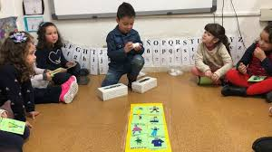

Adaptaciones y atención a la diversidad
El Juego de Operando” contempla estrategias de adaptación pedagógica que permitan garantizar la participación de todos los estudiantes, independientemente de sus características individuales.
Uso de instrucciones claras, sencillas y visuales.
- Explicaciones paso a paso según el ritmo del niño.
- Trabajo en parejas o pequeños grupos para apoyo mutuo.
- Flexibilidad en el tiempo de ejecución de las actividades.
- Acompañamiento personalizado del docente

Adaptaciones con necesidades educativas:
- Refuerzos positivos y motivación constante.
- Actividades graduadas por niveles de complejidad.
- Apoyo individual a estudiantes con dificultades motrices.
- Evaluación diferenciada según capacidades.
Casos importantes
El proyecto se alinea con un enfoque pedagógico centrado en el estudiante, priorizando el aprendizaje significativo, la exploración y el desarrollo integral.Y adicionalmente, es necesario incorporar explícitamente estas adaptaciones dentro de la planificación docente, con el fin de garantizar una atención adecuada a la diversidad presente en el aula